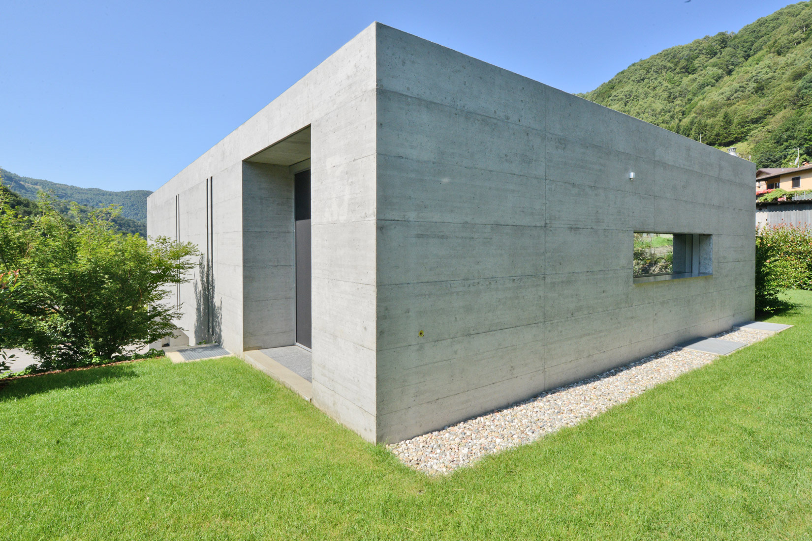
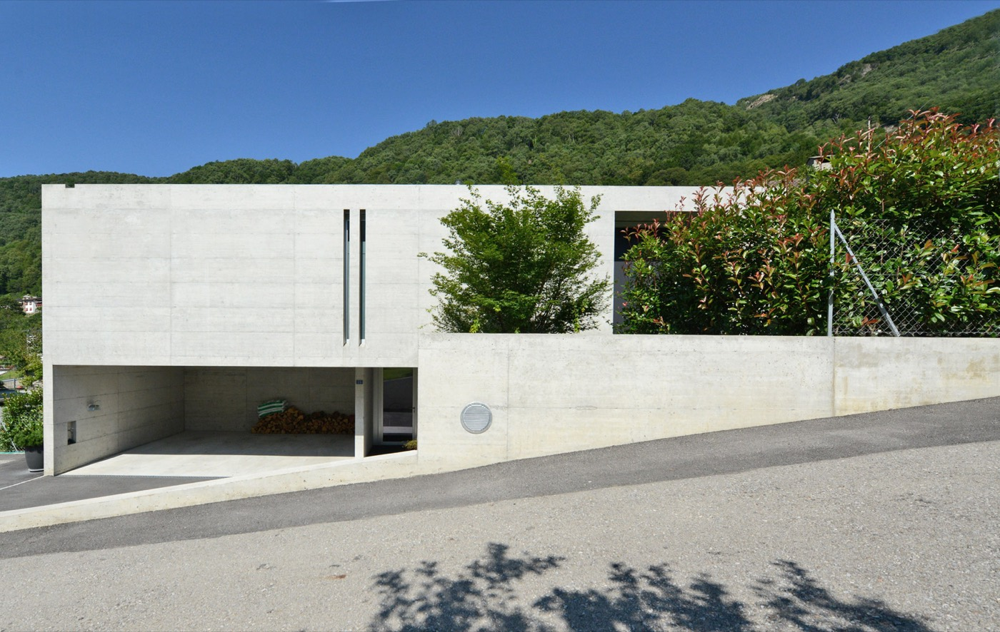
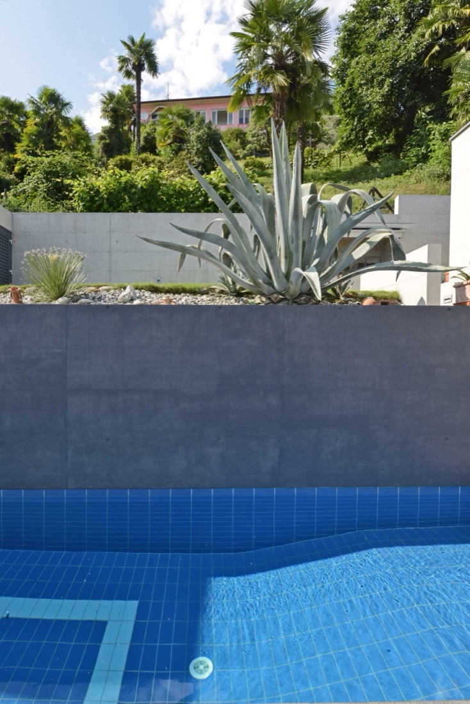
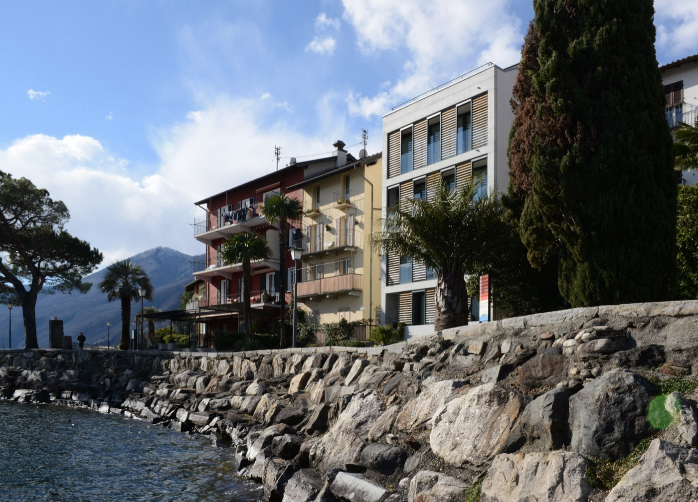
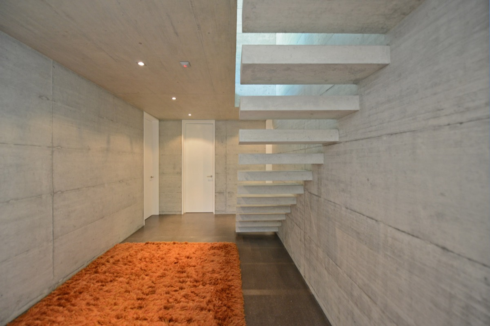
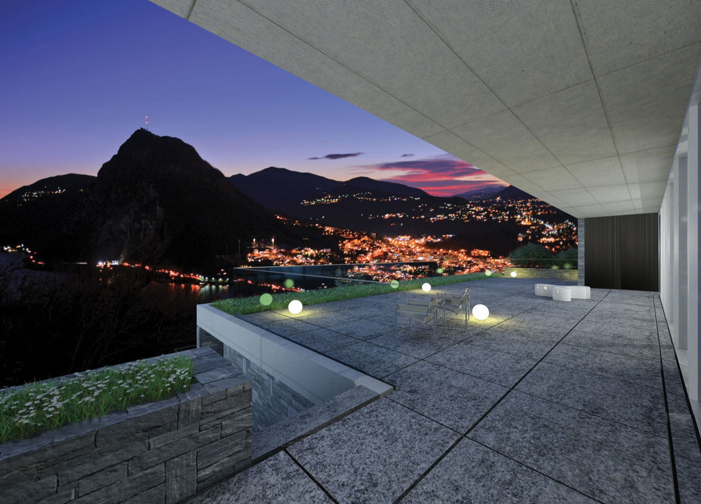
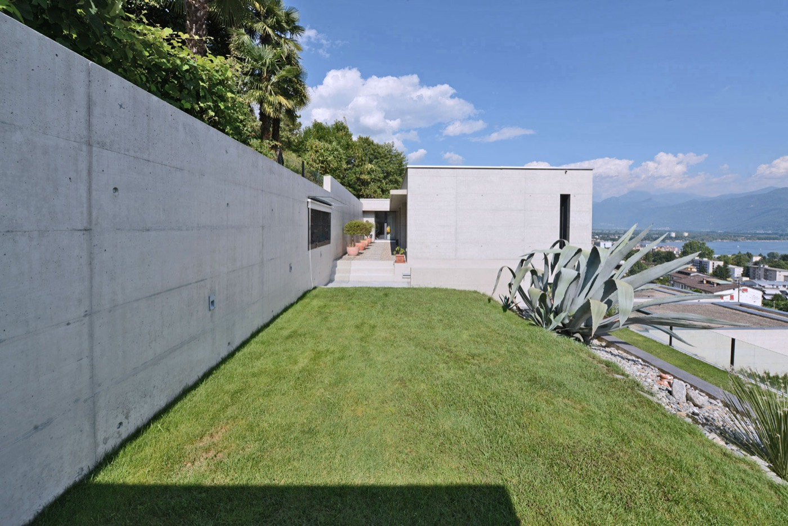
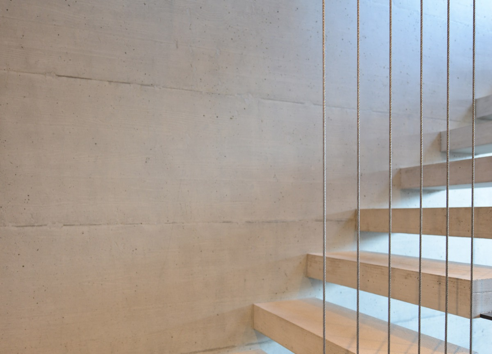

Casa unifamiliare, Isone, 2009 / 2012
Studio di architettura · Muralto
Linee pure, calcestruzzo a vista, il sito al centro.
Case, residenze, ristrutturazioni e alberghi nel Locarnese e nel Moesano. Progetto, direzione lavori e stime peritali, dal 1994.
1994studio a Muralto
48 operenel regesto 1994 / 2015
SIA · OTIAarch. dipl. EAUG Ginevra
Muralto · GronoLocarnese e Moesano
Metodo
Un volume pieno, scavato dove serve la luce.
- 01Il volume
Un parallelepipedo di 15.00 x 9.00 metri, in calcestruzzo facciavista.
- 02Nel pendio
Parzialmente interrato: 6.00 metri a valle, 3.00 a monte.
- 03Le aperture
Scavate nel volume: le vetrate rientrano di 1.00 metro, il posteggio ospita due auto.
- 04La materia
Il segno delle casseforme resta sulla facciata. Casa unifamiliare, Isone.
Opere
Alcune opere, fotografate a cantiere finito.






Regesto
48 opere, dal 1994.
Case unifamiliari, residenze, alberghi, banche e spazi pubblici, quasi tutti tra Muralto, Locarno e Minusio.
- 2014 / 2015Window LakeLugano AldesagoPrivato
- 2014Residenza LevanteLocarno MontiPrivato
- 2013Condominio residenzialeSavosaPrivato
- 2013Autorimessa Hotel MuraltoMuraltoPubblico
- 2012Ristrutturazione Villa PalmieraMuraltoPrivato
- 2010 / 2011Residenza SoldunoSoldunoPrivato
- 2010Centro socio-residenzialeMuraltoPubblico
- 2009 / 2011Casa unifamiliareRoveredo GRPrivato
- 2009VillaMinusioPrivato
- 2009 / 2012Casa unifamiliareIsonePrivato
- 2009 / 2010Residenza PozzaracchiaMinusioPrivato
- 2009 / 2010Residenza EllisseBellinzonaPrivato
- 2008 / 2011Casa BrissagoBrissagoPrivato
- 2008Ristorante La ChiesaLocarno MontiPubblico
- 2008Ampliamento casa unifamiliareMinusioPrivato
- 2008Concorso SI Cadro - Scuola dell'infanziaCadroPubblico
- 2007 / 2009Casa unifamiliareBrione sopra MinusioPrivato
- 2006 / 2008Hotel MuraltoMuraltoPubblico
- 2005 / 2006Casa a schieraLosonePrivato
- 2005 / 2008Residenza LepontiaMuraltoPrivato
- 2005 / 2008Ristrutturazione Ex Hotel MuraltoMuraltoPrivato
- 2004 / 2006Residenza CreanzaMinusioPrivato
- 2004 / 2006Residenza Verbania e Ristorante DivinoMuraltoPubblico e privato
- 2004Concorso Pista di ghiaccio SiberiaAsconaPubblico
- 2004 / 2005Tre Case unifamiliari VerscioVerscioPrivato
- 2004 / 2006Palazzina Residenziale CameliaMuraltoPrivato
- 2004 / 2005Centro per anziani Ex CapolineaMuraltoPubblico
- 2003 / 2004Nuova Farmacia ElveticaMuraltoPubblico
- 2003Ampliamento Studio MedicoLocarnoPubblico
- 2003 / 2004Due Case unifamiliariMontagnolaPrivato
- 2003 / 2004Casa unifamiliareCugnascoPrivato
- 2003Posteggio con AscensoreMuraltoPrivato
- 2003 / 2004Due Case unifamiliariCugnascoPrivato
- 2003Ampliamento Banca RaiffeisenMuraltoPubblico
- 2002 / 2003Ristrutturazione Casa PontiMuraltoPubblico
- 2001 / 2002Ristrutturazione Casa MagriMuraltoPrivato
- 2000 / 2002Due Case unifamiliariCugnascoPrivato
- 2000 / 2001Complesso di cinque case unifamiliariMinusioPrivato
- 1999 / 2000Hotel MillenniumLocarnoPubblico
- 1998 / 1999Casa bifamiliareVerscioPrivato
- 1998 / 1999Casa unifamiliareTorricellaPrivato
- 1997Ufficio Regionale di CollocamentoMuraltoPubblico
- 1997 / 1998Casa BifamiliareAsconaPrivato
- 1996 / 1997Nuova sede Banca RaiffeisenMuraltoPubblico
- 1995 / 1996Ristrutturazione rusticoRonco sopra AsconaPrivato
- 1994Chiosco Morley MuraltoMuraltoPubblico
- 1994Ristrutturazione e arredi casa unifamiliareCaviglianoPrivato
- 1994 / 1995Ristrutturazione ufficio regionale di collocamentoMuraltoPubblico

Lo studio
Arch. Indro Moretti, dipl. EAUG, SIA, OTIA.
Nato a Locarno nel 1967, si laurea all'École d'Architecture dell'Università di Ginevra, dove approfondisce restauro conservativo e urbanistica. Dal 1994 lavora come architetto indipendente a Muralto. Con l'architetto Guido Tallone ha redatto il Piano Regolatore di Muralto, tra il 1998 e il 2003.
"La predilezione per le linee pure, le geometrie regolari, l'ordine e la semplicità degli schemi compositivi, ma pur sempre nel rispetto del sito e delle esigenze del committente."
- 01Progettazione di case e residenze
- 02Ristrutturazioni e restauro
- 03Direzione dei lavori
- 04Stime peritali
- 05Arredamento d'interni
- 06Urbanistica
"Attenzione nei dettagli e cura del cliente, questi sono i punti forti che caratterizzano la professionalità e la qualità dello studio."
Stefan P., recensione Google
Contatto
Un terreno, una casa da trasformare, una stima?
Via Sarah Morley 6, 6600 MuraltoSuccursale: Via Porta Piazzetta 2, 6537 GronoApri in Google MapsAnche su WhatsApp, al numero dello studio, se attivo.